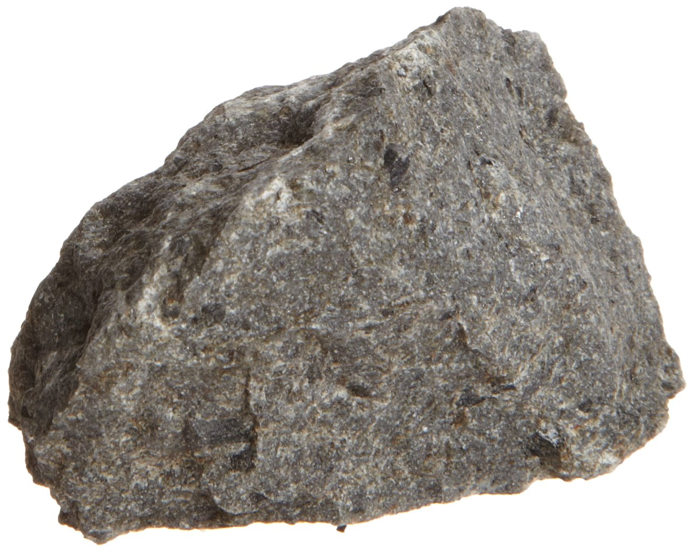
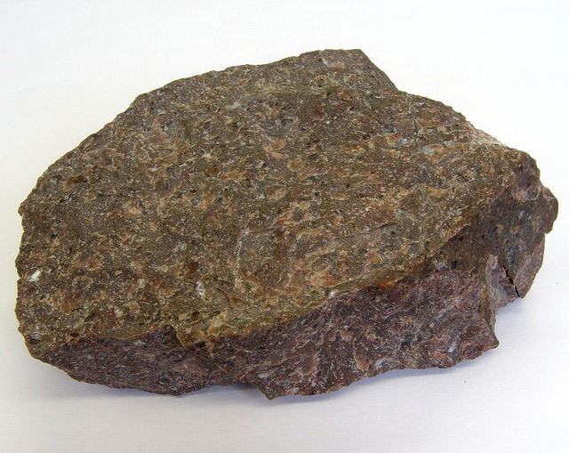
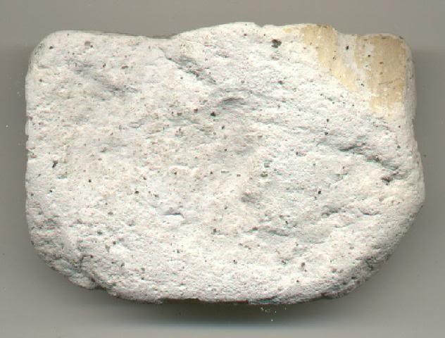

Igneous rock is formed through the cooling and solidification of magma or lava. Igneous rock may form with our without crystallization, either below the surface as intrusive rocks or on the surface as extrusive rocks. If the rock contains crystal, it means it cooled quickly.
There are two basic types of igneous rock, intrusive igneous rocks crystallize below Earth's surface, and the slow cooling that occurs there allows large crystals to form. Examples of intrusive are diorite, gabbro, granite, and peridotite.
Extrusive igneous rock erupt onto the surface, where they cool quickly to form small crystals. Some cool very quickly that they form an amorphous glass. Example of extrusive are andesite, basalt, obsidian, pumice, rhyolite, scoria, and tuff.
Igneous rocks may be cassified according through their chemical/mineral composition as felsic, intermediate, mafic, and ultramafic, and by the texture or grain size. Intrusive rocks are course grained while extrusive rocks may be fine-grained or glass. Volcanic rocks often have a porpohyritic texture characterized by visible crystals floating in a fine-grained groundmass. Felsic rocks are light in color; Intermediate rocks range through grays, and mafic rocks are black in color. Ultramafic rocks may range black to olivine green from mineral olivine.

Granite is a light colored igneous rock with grains. It forms from the slow crystallization of magma below Earth's surface. Granite is very common igneous rock, mainly because it's used for a lot of things such as floor tiles, paving stone, curbing, stair treads, building veneer, cemetery monuments, and more. Granite is a coarse-grained, light-colored igneous rock composed mainly of feldspars and quartz with minor amounts of mica and amphibole minerals.
.jpg)
Obsidia is a hard, dark, glass-like volcanic rock formed by the rapid solidification of lava without crystallization. is naturally formed as an extrusive rock. Obsidia is a mineral-like, but its not really a mineral because as a glass it is not crystalline, its composition is too complex to comprise a single mineral. Obsidian's composition is extremely felsic. Pure obsidian is usually dark in color, iron and magnesium typically give the obsidian a dark brwon to black color. Obsidian can be found in locations which have experienced rhyolitic eruptions. Obsidian can be used to make extremely sharp knives, and obsidian blades are type of glass knife made using naturally occuring obsidian instead of manufactured glass.

Basalt is a rock formed from the rapid cooling of lava exposed at or very near the surface of a planet or moon. Basalt is a fine-grained igneous rock with generally 45%-55% silica and less than 10% feldspathoid by volume. Basalt is the most common volcanic rock type on Earth. The average density is 3.0gm/cm3. Basalt is usually grey to black in color. Due to weathering or high concentrations of plagioclase, some basalt can be quite light-coloured.

Andesite is a dark, fine-grained, brown or greyish intermediate volcanic rock which is a common constituent of lavas is some areas. Classification of andesites may be refined according to the most abudant phenocryst. Andesite can be considered as the extrusive equivalent of plutonic diorite. Along with basalts they are a major component of the Martian crust. Andesite got its name from he Andes mountain range.

Tuff is a light, porous rock formed by consolidation of volcanic ash. Tuff is a soft rock, it has been used for construction since ancient times. Tuff can be classified as either sedimentary or igneous rocks. There are some types of tuff and these are: Welded tuff, Rhyolitic tuff, Trachyete tuff, Andesitic tuff, Basaltic tuff, and Ultramafic tuff. The ultramafic tuffs are extremely rare; their characterisitic is the abudance of olivine or serpentine and the scarcity or absence of feldspar and quartz.